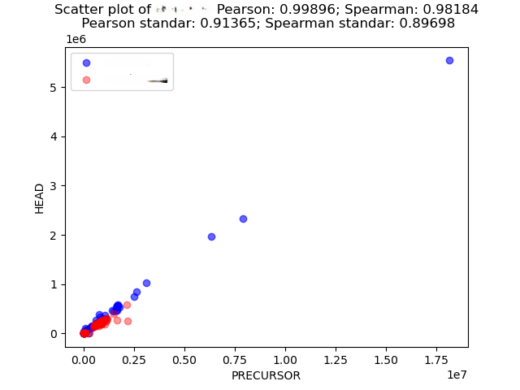
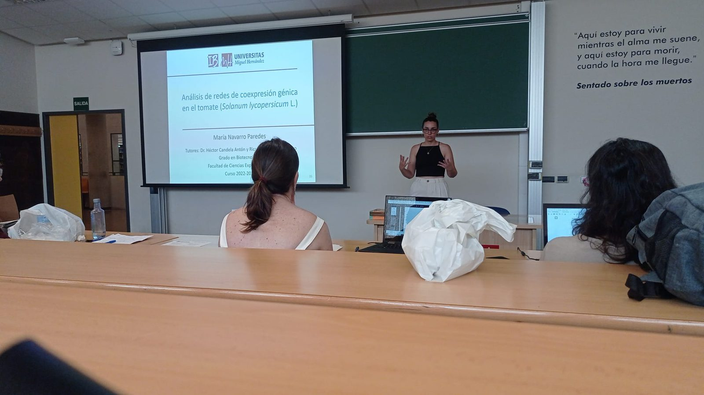
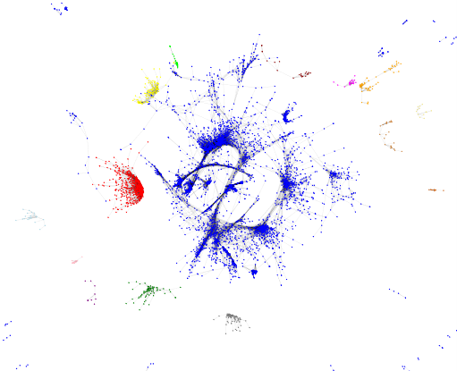
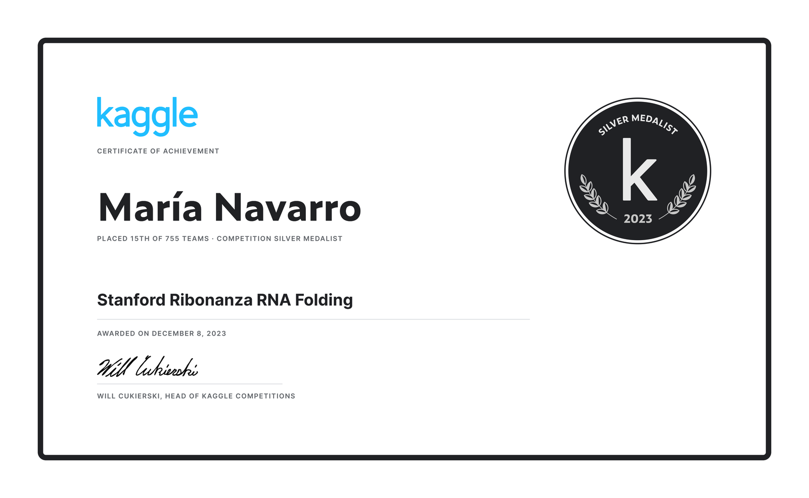
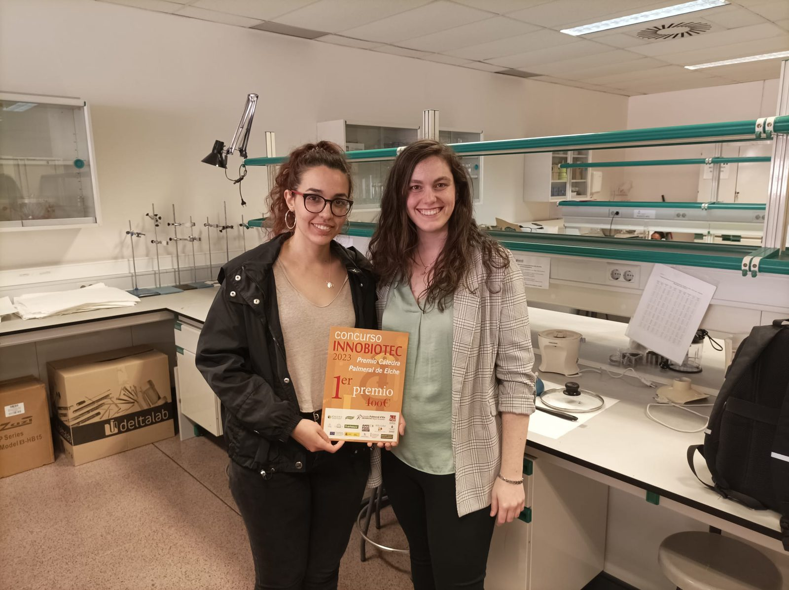
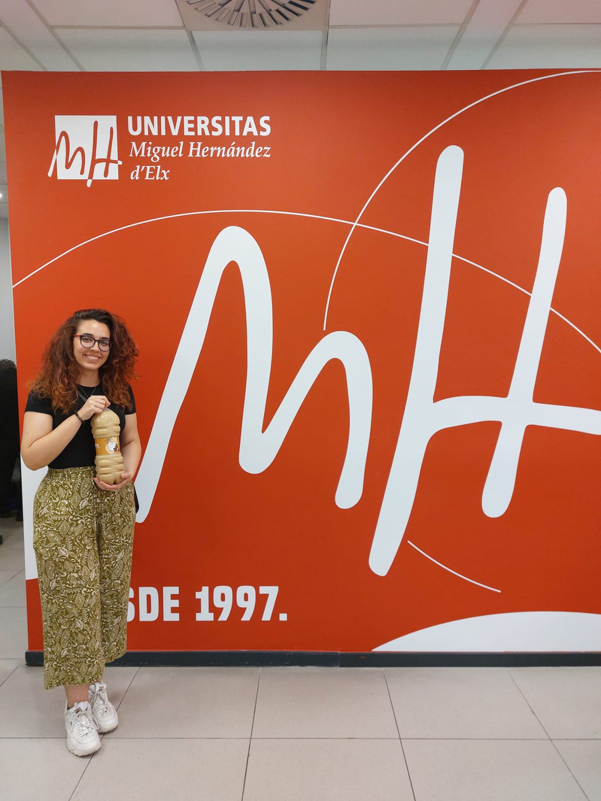
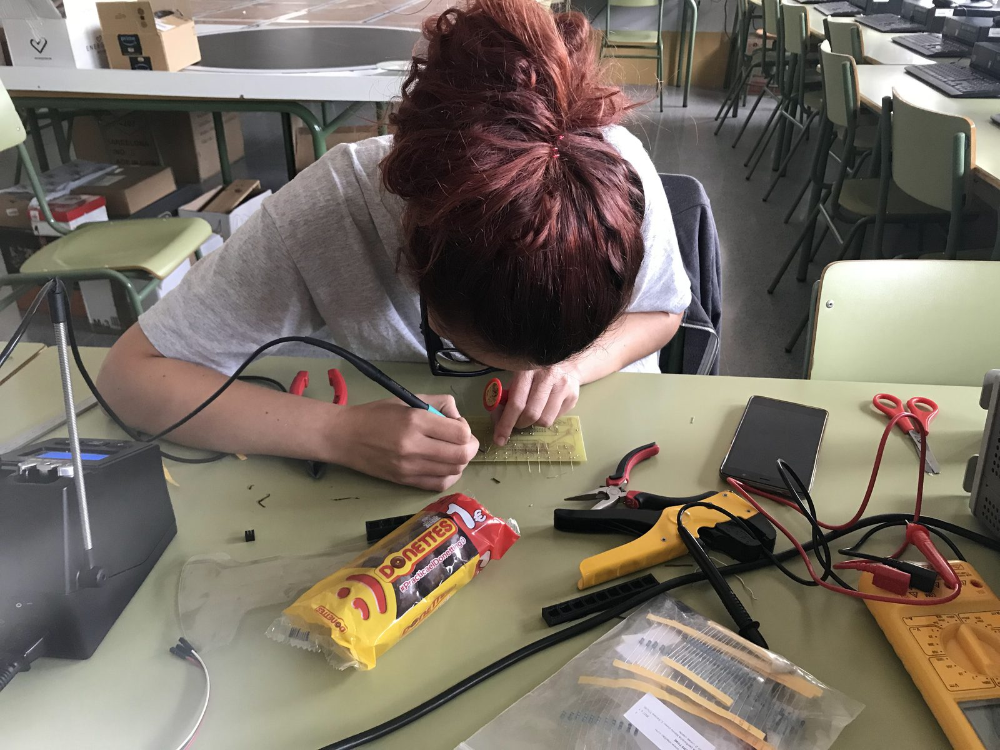
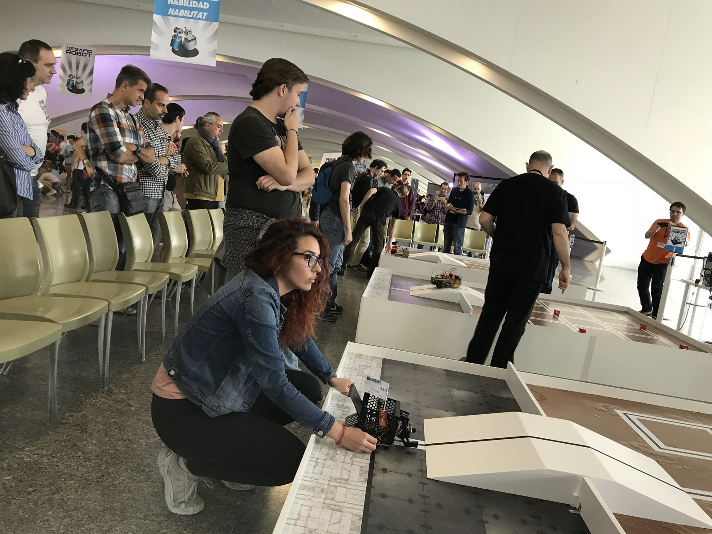
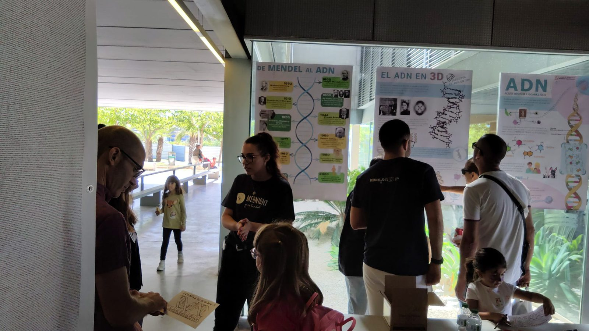
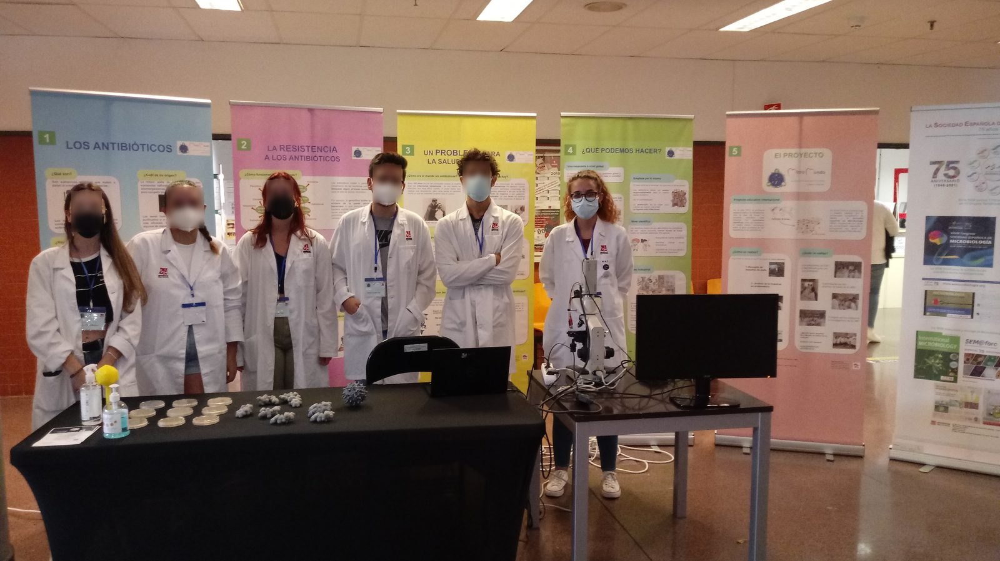

I'm a bioinformatician and data scientist who likes bridging the gap between code and
biology. My background spans industry machine learning at Santander Group and academic
research in genomic pipelines.
I enjoy building tools that make data accessible — like TomaSearch, a full-stack web app I
wrote to host my bachelor's thesis data, or BioData, a Streamlit viewer that turns protein binding
measurements into an interactive 3D structure.
Right now I'm looking for the next big step: a doctoral position in bioinformatics.
BioData is a Streamlit application designed for processing thermodynamic protein binding measurements (such as the SKEMPI 2.0 benchmark) featuring automated quality control pipelines and advanced 3D macromolecular visualizations. The platform provides full control over column mappings and QC thresholds to filter data in real-time, accompanied by searchable tables and dynamic diagnostic summary plots. Additionally, it includes an interactive 3D structural viewer that allows researchers to inspect mutation properties, highlight neighboring residues, and export comprehensive HTML executive summary reports.
TomaSearch is a Django and PostgreSQL web application developed for my bachelor's thesis to streamline the exploration and analysis of complex tomato gene-expression data. The platform enables researchers to efficiently query databases using specific gene IDs, GO terms, and subontologies, with the flexibility to export filtered datasets directly to CSV. Beyond querying, TomaSearch features an interactive graph visualization tool that dynamically maps gene-term relationships. Users can customize visual parameters and inspect detailed functional annotations by interacting directly with individual network nodes.
Master's thesis. I designed and implemented an end-to-end bioinformatics pipeline to identify regulatory binding motifs in bacterial DNA across diverse taxa, combining comparative genomics with pipeline automation (Python, BLAST, MEME Suite). The pipeline was validated against known genomic benchmarks and succeeded in identifying a potential binding motif not previously documented in Ignavibacteria, which partially coincides with its homologue in Xanthomonas campestris for the LexA repressor.
Automated Lipidomics Data Pipeline & Visual Analytics Tool

I designed and built an automated Python pipeline for processing high-throughput lipidomics data generated by LipidXplorer. It standardises raw mass spectrometry outputs, separates biological samples from internal standards, applies Pearson/Spearman correlation thresholds for automated quality filtering, and calculates absolute lipid concentrations. Plotly and Dash produce standalone, interactive HTML dashboards for multi-class data exploration.
PythonPlotlyDashLipidomics
Feb 2024 – Jul 2024 · IRBLLEIDA
Gene Co-expression Network Analysis in Tomato


Bachelor's thesis. I investigated the relationship between gene co-expression networks and functional Gene Ontology (GO) classifications to predict gene functionality and cellular location. Using transcriptomics and network analysis (Pearson's correlation, GO annotation; Python), I analysed large-scale expression data from 310 tomato accessions to build a comprehensive co-expression network, demonstrating that co-expressed gene subgroups map to closely related functional families.
RNA-seqGO ontologyPython
Feb 2023 – Jun 2023 · Grade 10/10
Experience
Quental TechnologiesMar 2024 – Jan 2025Remote, ES
Data Scientist
Worked across two primary entities within Grupo Santander (Banco Santander (Spain) and Santander Consumer Finance (UK)) focusing on deep learning model development and regulatory risk compliance.
Deep Learning and Forecasting: Engineered two deep learning models (Transformer and LSTM) in TensorFlow to forecast key financial metrics and time-series data.
Model Maintenance: Maintained, monitored, and optimized machine learning models built in R to ensure ongoing reliability and accuracy for time-series forecasting.
Risk Modeling and Compliance: Developed a Loss Given Default (LGD) model under the Internal Ratings-Based (IRB) approach, strictly aligning with PRA and ECB regulatory frameworks.
Technical execution: Programmed variable analyses (RDS), executed the TTW process, implemented decision tree segmentation, and calculated margins of conservatism (MoC) for final model deployment (SAS, SQL).
PythonTensorFlowRSASSQLDockerGitGitLab
IRBLLEIDAFeb 2024 – Jul 2024Remote, ES
Junior Scientist
Developed automated data pipelines and analytical software to support biomedical research.
Designed and built a custom Python application to process and analyze complex statistical data from LipidXplorer.
Automated the generation of comprehensive CSV data summaries and statistical analyses for end-users.
Programmed interactive HTML data visualizations categorized by species using a custom-built correlation filtering system.
PythonCondaWSL
Institute of Bioengineering, UMHJul 2022 – Oct 2022Elche, ES
Research Assistant
Conducted bioinformatics research focused on algorithm implementation and genomic data analysis.
Implemented sequence-alignment and preprocessing algorithms (Smith-Waterman, fastp) in Python for sequence analysis.
Identified homologous meiosis-related genes across 13 plant species, with sequence retrieval, result analysis and phylogenetic tree construction.
Performed routine molecular biology techniques, including DNA extraction.
Completed my bachelor's thesis on gene co-expression networks in tomato using Python and R.
Applied molecular modeling techniques to viral research targets.
Performed targeted molecular docking simulations of Zika virus nonstructural proteins at allosteric sites.
Utilized specialized bioinformatics software, including AutoDock, Yasara, Dock6, Xscore, and DSXscore, to evaluate binding energies.
Visualized and analyzed macromolecular structures using PyMOL, VMD and SwissPDB.
PyMOLVMDSwissPDBAutoDockYASARADock6XscoreDSXscore
Education
Open University of Catalonia · University of Barcelona2023 – 2024Spain
Master, Bioinformatics and Biostatistics
Honours in Omic Data Analysis and Programming for Bioinformatics.
Overall grade: 9.25.
Universidad Miguel Hernández de Elche2019 – 2023Spain
Bachelor, Biotechnology
Honours in Economics and Politics of Biotechnology, Legal and Social Aspects of Biotechnology, Plant Physiology and Biochemistry.
Overall grade: 7.85.
Elected Class Delegate for three consecutive years and Faculty Delegate in my final year, representing students to faculty and on university boards.
Competitions & honours
Sep – Dec 2023 · Kaggle competition
Stanford Ribonanza RNA Folding · silver medal
Predicting RNA secondary structure from sequence and chemical-mapping data, 15th of 755 teams. Learned: Transformer models, sequence feature engineering, and holding a position on a leaderboard.

2023
INNOBIOTEC · first prize
My partner and I designed Horchátil, a tiger-nut horchata with an Elche date (the Confitera variety) and oats. Taking first prize was a joy: a functional food that also brought two food cultures together — Valencia and Elche.


2018 · Robotics
Desafío Robot · FREE MARS and FREE SUMO
First and second prize in the FREE MARS category, and first and second prize in the FREE SUMO category. Learned: arduino, sensor calibration, control loops, and debugging hardware with the clock running.


Honours · Academic
High school honours · honourable mention
Graduated with high school honours and an honourable mention for academic performance.
Spanish · nativeValencian · professionalEnglish · full professional
Certifications
Cambridge English: Advanced (CAE)
Machine Learning and Big Data for Bioinformatics
Power BI Fundamentals
Introduction to Python
Introduction to Artificial Intelligence
Artificial Intelligence with Python — Universidad Miguel Hernández de Elche
Learn SQL — Codecademy
Data Analysis with Python — freeCodeCamp
Publications
Developing novel tools for the genomic characterisation of crop plants — poster presented at the 16th St. Albert the Great Conference, Faculty of Experimental Sciences, Miguel Hernández University (UMH), Elche, 13 Nov 2024. It presented new tools for the genomic characterisation of crop plants, including my bachelor's thesis.
MicroMundo's educational project: an innovative programme designed to tackle the antibiotics crisis — video-poster presented at the 13th St. Albert the Great Conference, Faculty of Experimental Sciences, Miguel Hernández University (UMH), 10 Nov 2021, on the teaching and research project carried out during the implementation of the MicroMundo Project.
Volunteering
Miguel Hernández UniversitySep 2021 – Sep 2023Elche, ES
Science Communicator
Participated in multiple science outreach events, including the Mediterranean Researchers' Night.
Led workshops on microbiology and genetics for university and high school students.
Organised sessions on antibiotic resistance in congresses and public exhibitions.


Biotechnofarm · FEBiotecMar 2022 – May 2023Alicante, ES
Coordinator and Speaker
Coordinated and managed biotechnology workshops and talks in high schools across Alicante.
Delivered hands-on activities and outreach sessions to promote scientific vocations among students.
ABiVa · BAC Congress XVJan 2022 – Jul 2022Remote, ES
Social Media Consultant
Managed communication and social media content for the national biotech congress.
Created and scheduled posts for online promotion and engagement.
MicroMundo ProjectSep 2021 – Dec 2021Elche, ES
Monitor · Small World Initiative
Conducted microbiology outreach sessions in high schools focused on antimicrobial resistance.
Performed lab experiments: soil sampling, culturing and microorganism screening.
Presented two video-posters at St. Albert the Great Conference (2021).